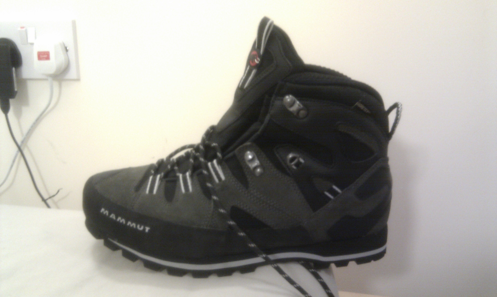

Probably the most crucial piece of luggage you’ll take with you on your trip. If you’re caught short for clothing or equipment in Kathmandu, you still have the opportunity to buy what you need, but if you’re without decent boots, you’re gonna have to buy a new pair and a hiking trip to Everest is not where you want to be breaking in new boots…
Up until this point in my life I’ve not owned any sort of off-trail footwear. I’ve typically been limited to sports shoes, trainers and formal shoes and didn’t really know what to look for. Luckily, there seems to be quite a few outdoor stores around where I work that I could go ask: Blacks, Cotswold, Ellis Brigham, Kathmandu, Snow+Rock etc.

So following the advice (hard sell) of one of the guys in the store, I ended up shelling out for a pair of Mammut Mt Cliff GTX (see review here) and a stack of hiking socks of varying thickness. All came up to about £300. You can easily find this stuff for cheaper online if you’re willing to take the time and know what you’re looking for.
I spent quite a while talking to the guy in the store about my posture, footsize, shoe rigidity and woulda felt a tad guilty if I didn’t buy anything after taking up so much of his time…
Surprisingly, it turns out I have some over pronation and needed some decently rigid insoles. I also found out that my right foot is about half a size larger than my left. Not too unusual (it’s quite common), but while I suspected it, I never bothered to check with any sort of measurement. If you’re going to be walking over rocky ground, you need less flexible shoes so you’re not wasting energy wobbling over little rocks and slipping about on loose dirt.

The huge-ass shoebox also makes for quite a nice memorabilia container - useful for all these notes and receipts and whatnot…
Details: Mammut Mt Cliff GTX, liner socks, medium hiking socks, thick hiking socks x 2, support insoles
Total cost: £270
Update: I also bought another pair of medium hiking socks and another two pairs of thick socks to add to the pile.
Afterthoughts:
The boots were perfect and I had no complaints. Despite being still quite new-ish, they didn’t cause any blisters or anything. They’re a bit heavy for walking about indoors (stomping about at night to go to the toilet, waking everyone up), but that just mostly my own fault for not taking trainers.
I think I’d take more socks in future though - I didn’t count on having to change socks every three/four hours for the amount my feet were sweating. Ugh.
Another thing which might come a cropper in the future is that these boots aren’t configured for attaching crampons for ice climbing. If you’re buying new boots and into that sorta thing, this might be worth bearing in mind.
EDIT 06/01/15: Turns out these boots are rated B1, and so will accept crampons of rating C1. It’s only taken me three years to work it out! On a plus point, I’m still wearing these boots, and they have seen me through Kilimanjaro, Kinabalu, Iceland, Sweden and numerous trips in Scotland and Wales, and they’re still going strong!